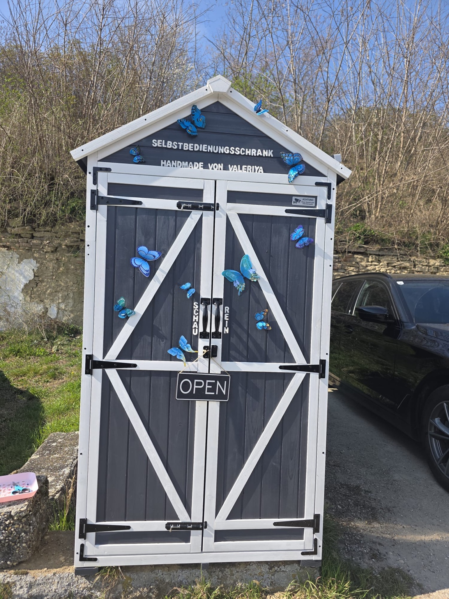
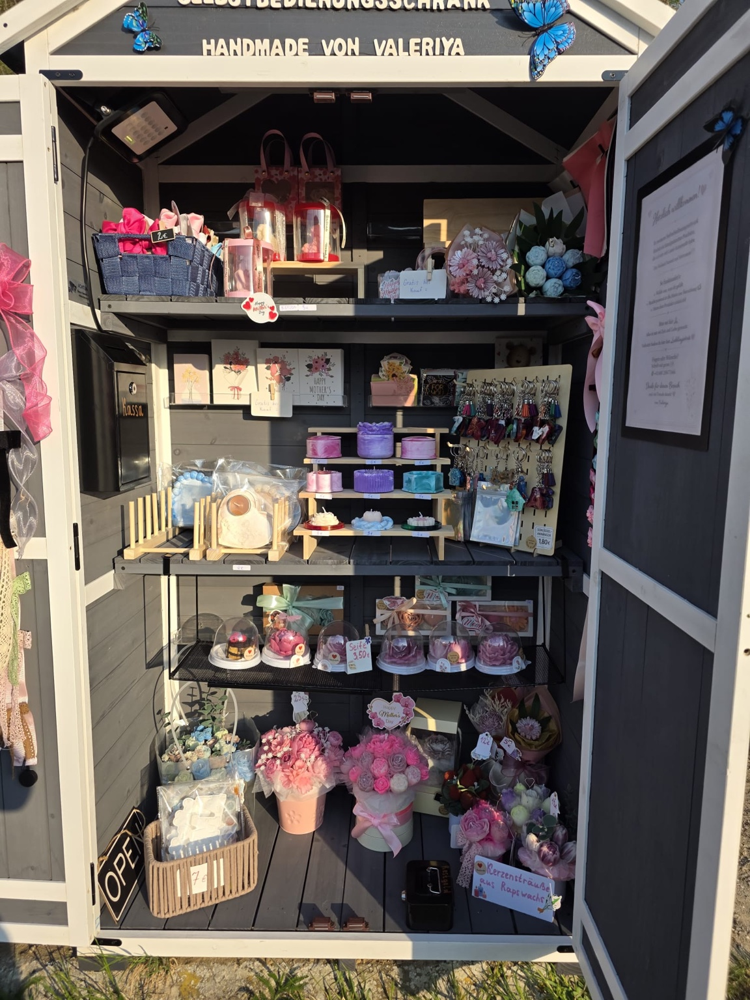
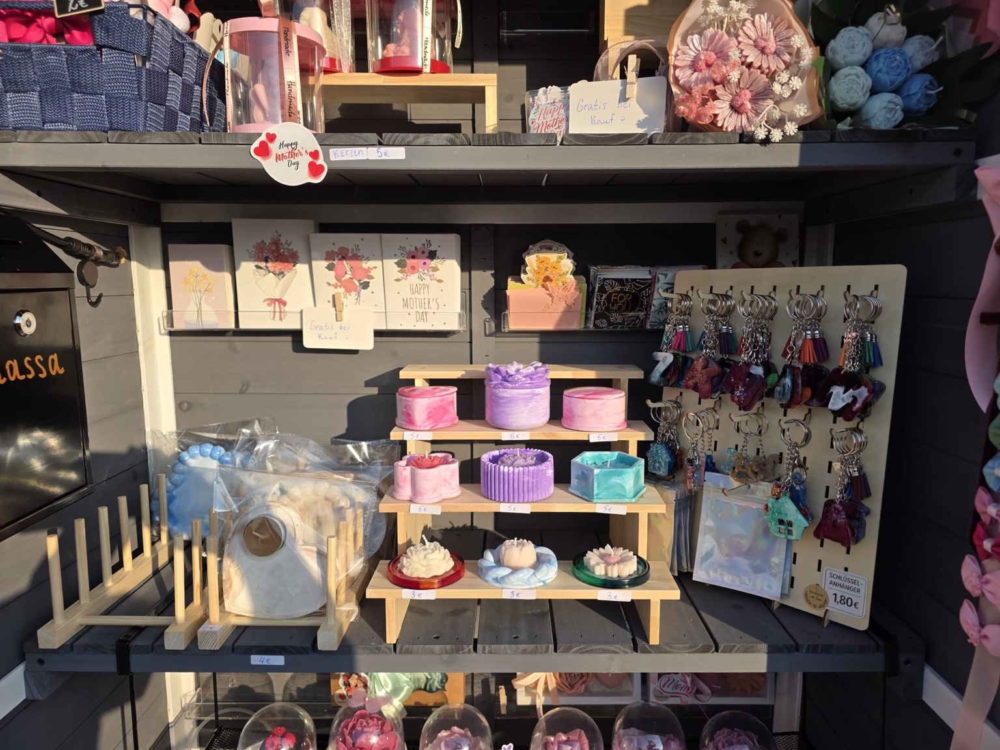
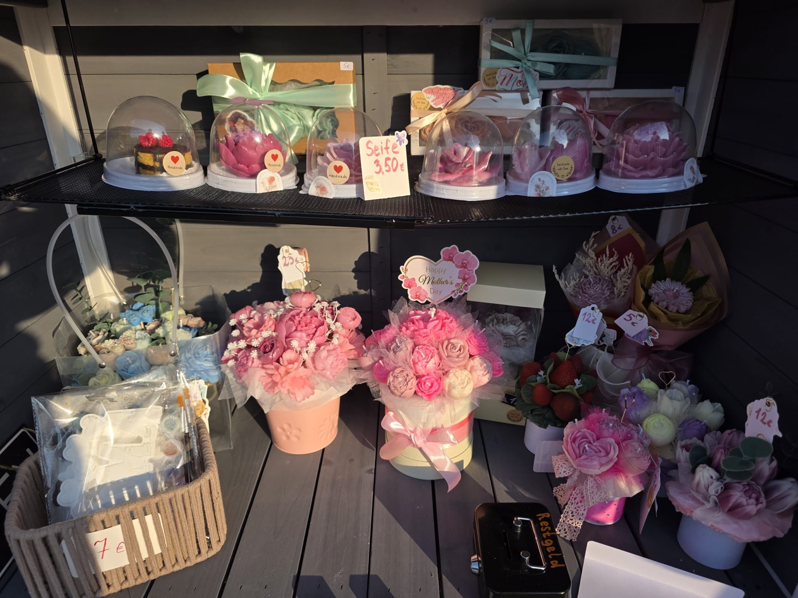
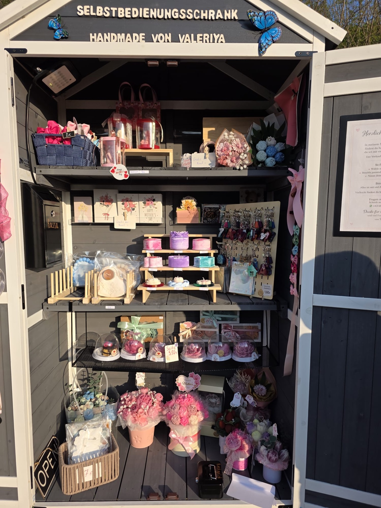

Liebevolle Handmade-Geschenke für jeden Anlass
Entdecken Sie handgemachte Seifen, Schlüsselanhänger, Haarschleifen und viele weitere kleine Geschenkideen — schön verpackt, kreativ gestaltet und jederzeit im Selbstbedienungsschrank erhältlich.

Was gibt es im Schrank?
Alles ist selbst gemacht und mit viel Detail dekoriert. Ideal als Geschenk, kleine Aufmerksamkeit oder Dekoration.
Handgemachte Seifen
Blumen-Seifen, Geschenkseifen und dekorative Seifen in schönen Farben und Formen.
Schlüsselanhänger
Bunte Anhänger mit Glitzer, Quasten und kleinen Motiven — praktisch und süß.
Haarschleifen
Schöne Schleifen und Accessoires für Kinder und Erwachsene.
Geschenkideen
Blumenboxen, Kerzen, Karten, kleine Sets und vieles mehr.
Galerie
Ein Blick in den Selbstbedienungsschrank und auf die aktuellen Handmade-Produkte.




Besuchen Sie uns
Der Schrank funktioniert ganz einfach: Produkt aussuchen, Preis ansehen und selbstständig bezahlen. Perfekt, wenn Sie schnell ein schönes handgemachtes Geschenk brauchen.
Handmade mit Herz
Seifen, Schlüsselanhänger, Haarschleifen und Geschenkideen — alles liebevoll selbst gemacht von Valeriya.
Jetzt per WhatsApp kontaktieren